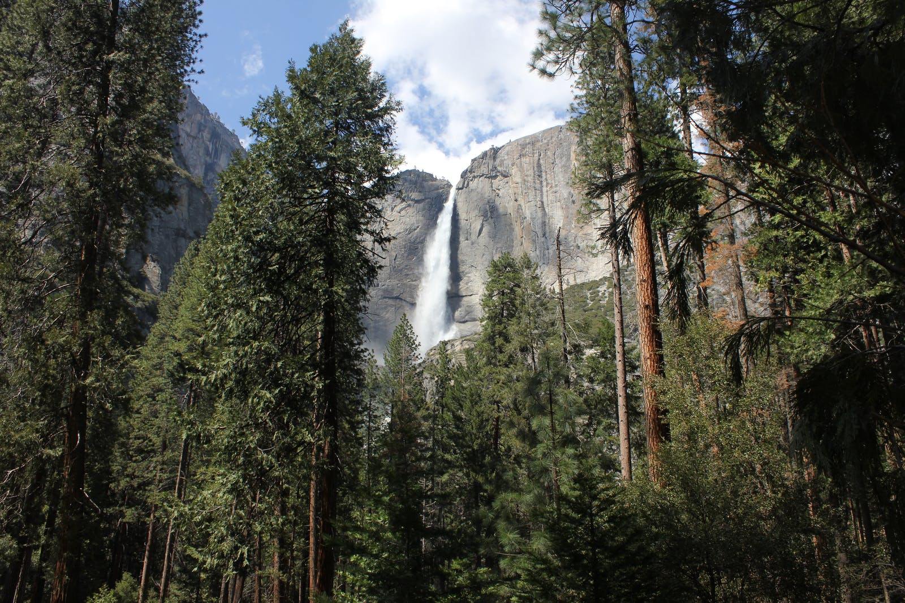
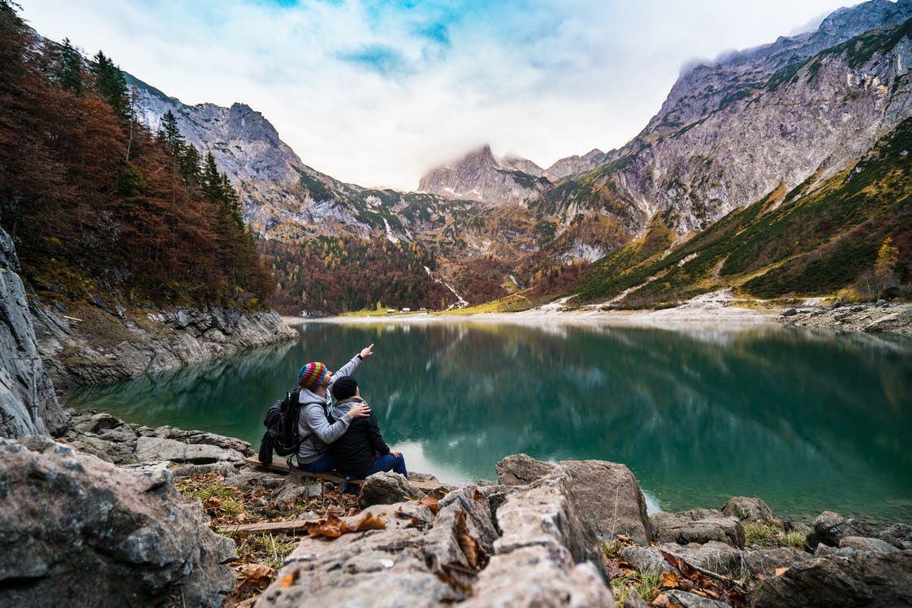
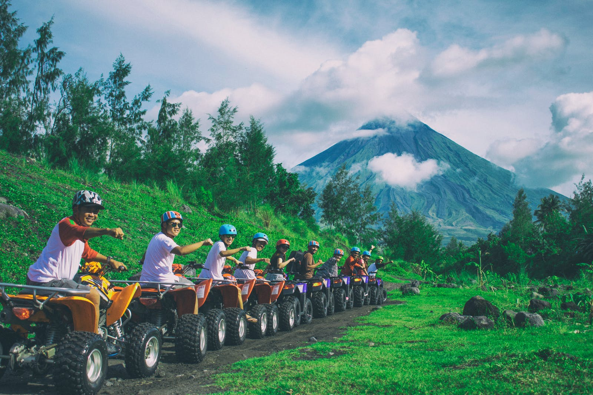

Mouse King Trail
The Mouse Trail is also known as the John Muir Trail. The John Muir Trail passes through what many backpackers say is the finest mountain scenery in the United States. This is a land of 13,000-foot and 14,000-foot peaks, of lakes in the thousands, and of canyons and granite cliffs. The John Muir Trail is also a land blessed with the mildest, sunniest climate of any major mountain range in the world.
Length: 0.55 mile
Elevation: 10 ft
Difficulty: Beginner
Reviews:
Amy ★★★★
Really Nice Place.
Bin ★★★★
Nice views.
Kevin ★★★★★
Took a lot of beautiful pictures.
Picture:


